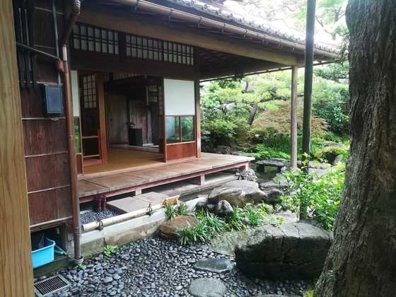
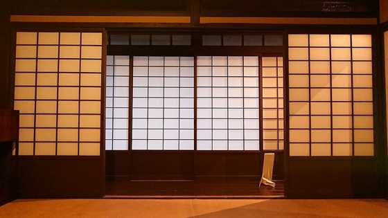
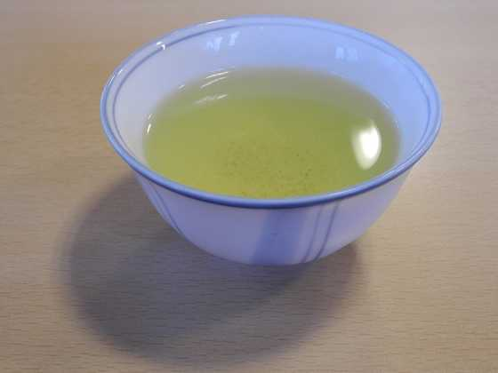
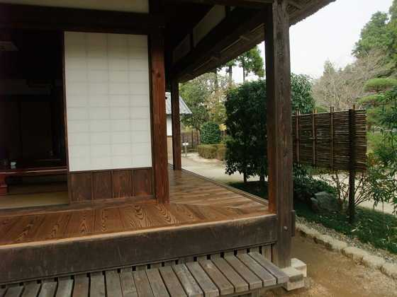

日立市宮田町・熊野神社のそばの、民家のカフェ
健康ごはん ゆめこまち
カラダの中から美しく。毎日食べたい、やさしいごはんを。
コンセプトの一文は、紹介記事にある「カラダの中から美しく」をもとにした制作側の表現です。

お店のこと
桜の熊野神社の近く、民家を改装した小さな食事処。
紹介記事によると、「健康ごはん ゆめこまち」は、桜で知られる熊野神社の近くにある民家を改装したお店で、2022年5月20日にオープンしました。コンセプトは「カラダの中から美しく」。カロリーを抑え、毎日食べて健康になれるようなメニューを心がけているとのことです。ご飯はコシヒカリに雑穀を混ぜ、糖質を15%カットしているそうです。
調理は一人で行っているため、食品ロスを防ぐためにも、できれば事前の予約をお願いしたいと紹介されています。
店名の意味や、オーナーさまの想いの詳細は確認できていないため、ここでは触れていません。情報源は紹介記事(日立ろっこく)と食べログの掲載内容です。


口コミ
お客さまの声(イメージ例)
以下は制作側が作成したイメージ例で、実在のお客さまの声ではありません。
イメージ例
民家の落ち着いた雰囲気で、ほっとひと息つけました。やさしい味つけで、午後も元気に過ごせそうです。
イメージ例
雑穀の入ったごはんがおいしくて、野菜もたっぷり。毎日でも食べたくなるごはんでした。
イメージ例
食後のお茶までゆっくりいただきました。予約をしておいたので、安心して伺えました。


アクセス・ご案内
お店の情報
| 住所 | 〒317-0055 茨城県日立市宮田町4丁目8-17 |
|---|---|
| 電話 | 準備中 |
| 営業時間 | 準備中 |
| 定休日 | 準備中 |
| ご予約 | 事前予約をお願いしたい旨が紹介されています(詳細は準備中) |
| @yumecomachi.r |
営業時間・定休日は情報源により差があるため掲載せず、最新情報はInstagramでご確認ください。
Instagramを見る